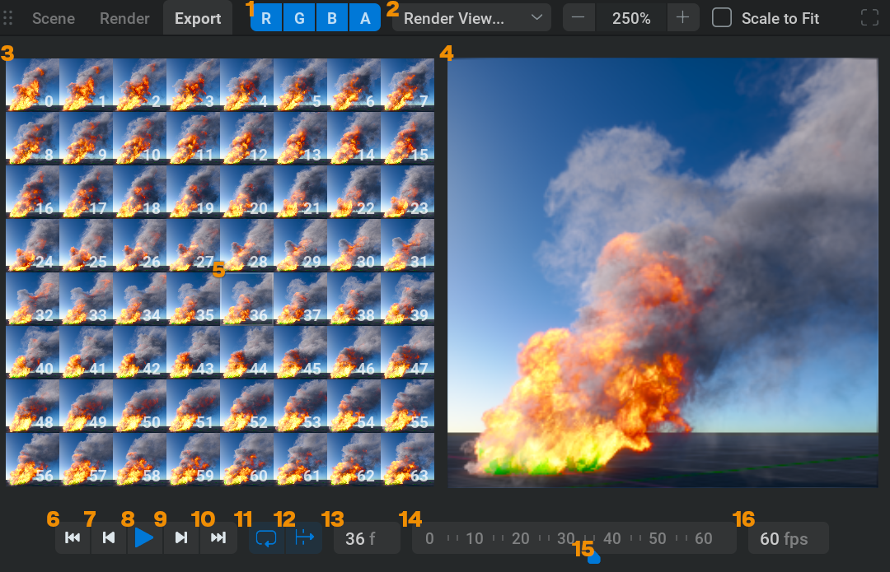
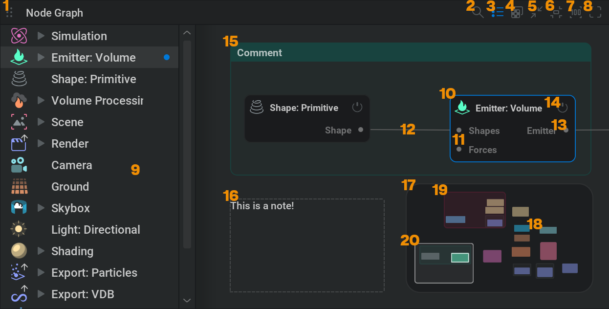
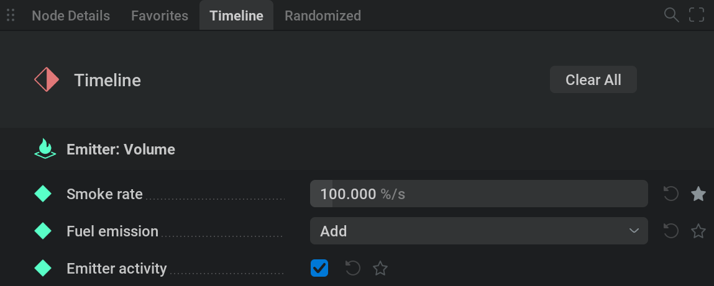
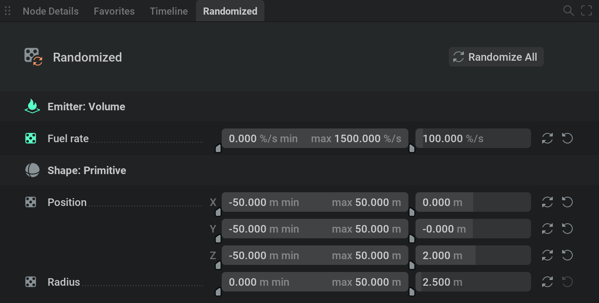
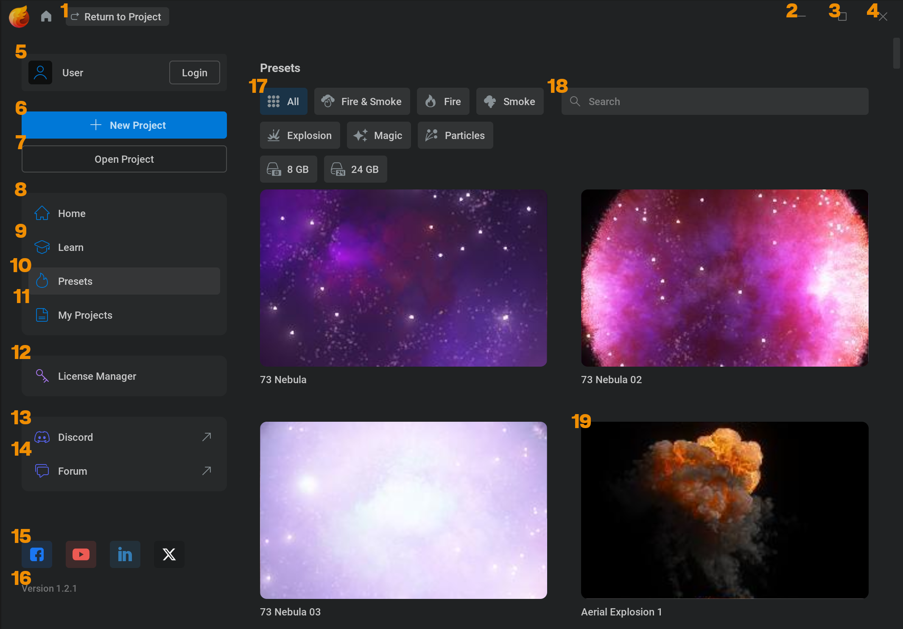

用户界面#
本页会说明用户界面的各个方面。
菜单栏#

 打开或关闭项目管理器。
打开或关闭项目管理器。File：
New Project Ctrl + N：离开当前项目，并从默认预设开始。如果当前项目有未保存的更改，会弹出提示询问是否保存。
Open Project Ctrl + O：打开文件浏览器，以便选择要打开的 .ember 文件。
Recent Projects： Ctrl + Shift + P 将鼠标悬停在此菜单项上时，会在右侧打开一个菜单，可从中选择最近打开的项目。
Save Ctrl + S：保存项目以更新 .ember 文件
Save As… Ctrl + Shift + S：打开文件浏览器，可在其中定义项目的文件路径和文件名。
Increment and Save Alt + Shift + S ：在项目文件旁边保存当前项目文件的递增副本。例如，如果当前正在处理 myProject1.ember，项目会被保存为 myProject2.ember，并放在与 myProject1.ember 相同的文件夹中；你会自动继续在 myProject2.ember文件中工作。请注意，项目是在递增之后保存的。如果项目名不是以数字结尾，第一次递增时会添加 _2。
Import… Ctrl + Shift + I：打开文件浏览器，以便查找要导入项目的 .fbx、.obj 或 .abc 文件。节点图中会使用指定资产创建一个
 Import 节点。
Import 节点。Export Variations…： 打开 Export Variations 窗口，用于导出多个独特元素。关于这一点的更多信息，请查看我们的 随机化 页面。
Quit Ctrl + Q：关闭 EmberGen
Edit：
Undo Ctrl + Z：撤销操作。
这可以包括各种操作，例如更改参数或创建节点。
Redo Ctrl + Y 或 Ctrl + Shift + Z：重做操作。
Delete Delete 或 Backspace：可以删除、剪切、复制和粘贴节点或关键帧等内容。
Cut Ctrl + X
Copy Ctrl + C
Paste Ctrl + V
Simulation：
Hard Reset Ctrl + R：从头重新开始模拟。
Reset R：从循环边界的开头重新开始模拟；如果没有循环边界，则从时间轴开头重新开始。
Step Once Z：将模拟向前推进一帧。
Pause Space：播放或暂停模拟。
设置:
Account：
Login…： 打开登录窗口，可使用电子邮件地址和密码登录 JangaFX 帐户。
{kind=link}
- 登录后， Account 下拉菜单中会出现以下选项：
My Account：前往我们的在线帐户平台，可在那里管理订阅和账单。
My Plans…： 显示当前有效的计划。
Logout…： 退出 JangaFX 帐户。只要有有效许可证，仍然可以使用软件。
Help：
JangaFX.com…：前往 JangaFX 网站，可查看产品、预设市场、定价页面等内容！
Documentation… 前往 EmberGen 文档。
Guided Tours…： 在 UI 右侧打开一个窗口，可从中选择要跟随的引导教程。引导教程会在软件内用视觉内容和文字解释 EmberGen 功能。
License Manager： 打开 License Manager 窗口。更多信息请查看我们的 许可 部分。
Release Notes…： 打开一个窗口，其中列出开发者在近期 EmberGen 版本中所做的所有更改。
3rd Party Licenses…： 打开一个窗口，其中列出用于开发 EmberGen 的资源的许可证声明。
About…： 打开一个窗口，显示公司说明以及 EmberGen 能做什么的简要概述。
当前项目的文件名。 (Edited) 会在存在未保存更改时显示在文件名后面。打开默认预设时这里不会显示任何内容，但对其做出更改后，会显示 Untitled(Edited)。尝试保存未命名文件时，会弹出文件浏览器来设置文件名和位置。
 显示项目备注。打开 Project Notes 窗口。只有在项目中添加备注时，此图标才会出现；可以在 Settings > Project Settings… >
显示项目备注。打开 Project Notes 窗口。只有在项目中添加备注时，此图标才会出现；可以在 Settings > Project Settings… >  Notes 中完成。
Notes 中完成。最小化 EmberGen 窗口。
最大化 EmberGen 窗口。
关闭 EmberGen。
视口#
这里可以查看模拟、形状、力，或场景中的任何内容。

 使用
使用  拖动，可以通过此图标移动 4 个主要区块来重新排列 UI 布局。
拖动，可以通过此图标移动 4 个主要区块来重新排列 UI 布局。Scene 是默认选项卡，可在其中查看和操作所有内容。
 可用摄像机的下拉菜单。在这里可以选择要透过哪台摄像机查看。
可用摄像机的下拉菜单。在这里可以选择要透过哪台摄像机查看。

 可在 Scene 选项卡中隐藏或显示的所有内容的下拉菜单。
可在 Scene 选项卡中隐藏或显示的所有内容的下拉菜单。Simulation M (15)
Unlit Mode U 降低着色复杂度。这会显著提高渲染速度；当你处理模拟时想获得更好性能且不需要查看最终着色时会很有用。
Bounding Box B (14)
Shapes H (16)
Backplates Shift+B 这会切换背板可见性。背板可在 Camera 节点中添加。
Masking 这会可视化所有包含内容的体素。
Manipulators Shift+Q (17) 这会切换平移、旋转或缩放操纵器的可见性。
Manipulator Switcher 这会显示 Move
 (8), Rotate
(8), Rotate  (9) 和 Scale
(9) 和 Scale  (10) 按钮。
(10) 按钮。Entity Icons (18) 会在节点位置显示节点图标。在此例中是 Line Force 节点。单击实体图标会选择对应节点。
Camera Gizmo (11) 活动摄像机视口方向的可视化表示。可以
单击圆点，将视图定向到该轴。也可以 单击并拖动球体来旋转视图。Render Quality 会在右侧打开一个菜单，可在其中选择 Low Ctrl + 1, Medium Ctrl + 2，或 High Ctrl + 3
在某些情况下，例如使用 Flames translucency（火焰半透明）时，近距离查看模拟可能会看到大量色带。设置更高的渲染质量有助于处理这一问题。
也可以降低渲染质量来提升性能。
Low、Medium 和 High 是可以在 Settings > Preferences… > Viewport Quality（视口质量）中编辑的预设。
- Settings (22) 添加一个包含常用设置的框，便于快速访问。
Render Quality 快速选择上述三个渲染质量预设之一。
View Mode 可选择使用 Lit 获得正确着色，或使用 Unlit 进行简单着色，从而腾出一些资源以加快模拟。作用与切换 U 键相同。
Projection Quality 在投影质量预设之间循环切换。这主要是在模拟速度与碰撞和压力精度之间取舍。这些设置也位于
 Simulation 节点的 Projection 选项卡中。有关投影的更多信息，请查看我们的 ..TBD.. 章节！
Simulation 节点的 Projection 选项卡中。有关投影的更多信息，请查看我们的 ..TBD.. 章节！Render Shapes 切换形状是否可见。作用与切换 H 键相同。
Lock Camera 锁定活动摄像机，使视图不能再被更改。（不适用于默认摄像机）这与使用 Lock 复选框的作用相同，该复选框位于 General 选项卡中，属于
 Camera 节点。
Camera 节点。
- Stats (23)
Bounds： 三个轴上的体素数量。体素越多通常意味着边界框越大，并且有更多空间用于模拟体积。这些值可以通过 Voxel count 参数调整，该参数位于 Domain 选项卡中，属于
Simulation 节点。Voxels： 模拟中的体素总数。它是上面提到的体素尺寸相乘得到的结果，单位为 mVox，表示“Million Voxels（百万体素）”。有关体素的更多信息，请查看我们的 体素 章节。
Sim Time： 模拟一个模拟步所需的时间，单位为毫秒。
Sim Speed： EmberGen 的模拟速度，单位为百万体素每秒。
Resolution： 视口分辨率，单位为像素。
Render Time： 将体积渲染到屏幕所需的时间，单位为毫秒。切换到较低质量或 Unlit 模式时，可以看到数值下降。
UI Framerate： UI 每秒更新的次数。
VRAM： 当前使用的 GPU 内存与总可用内存。
Particle Count 当前由 Particles 节点创建的粒子数量。如果只显示 7，表示模拟中有 7 个粒子； 7.0 K 表示 7000 个粒子； 7.0 M 表示 7,000,000 个粒子。
 切换面板全屏。
切换面板全屏。
Force Gizmo 大多数力都有一个 Gizmo，可用浅蓝色箭头显示该力注入速度的方向。
Inner Bound 所选力的内部边界。内部边界的透明区域表示力保持 100% 的区域。可以将某些力节点 Falloff 参数设置为 None 以外的值来设置边界，该参数位于 General 选项卡中。
Outer Bound 所选力的外部边界。加深显示的区域表示过渡区域：力从内部的 100% 过渡到外部的 100% 减去 Falloff percent（因此默认外侧为 0%）。

Render 是用于预览将要导出内容的选项卡。
- View 下拉菜单，可切换统计信息的可见性。
Render nodes（渲染节点）下拉菜单。在这里可以选择要预览的 Render 节点。
渲染通道下拉菜单。在这里可以选择要预览的 Render pass。
 No Render pass mapping（无渲染通道映射）警告。看到这个图标表示 Render 节点中没有设置 Render pass mapping（渲染通道映射）。可以单击此图标自动创建一个。
No Render pass mapping（无渲染通道映射）警告。看到这个图标表示 Render 节点中没有设置 Render pass mapping（渲染通道映射）。可以单击此图标自动创建一个。 切换渲染设置。它会显示或隐藏渲染设置 (13,14) Render Settings
切换渲染设置。它会显示或隐藏渲染设置 (13,14) Render Settings放大或缩小。
缩放以适配整个选项卡。勾选后会禁用 6
 将缩放（6）重置为 100%
将缩放（6）重置为 100%切换裁剪 Gizmo。
在水平和垂直轴上裁剪。
垂直裁剪。
水平裁剪。
常规渲染设置
Render pass 专用渲染设置。

Export 在这里可以查看已导出的翻页序列或图像序列。
Channels。
单击这些按钮中的任意一个可单独查看 Red（红）、Green（绿）、Blue（蓝）或 Alpha（透明度）通道；再次单击该通道可回到同时查看 Red（红）、Green（绿）和 Blue（蓝）。 Ctrl + 单击某个通道可将其加入通道选择或从中移除。渲染通道。映射后的渲染通道下拉菜单，可选择要查看导出结果的渲染通道。
Flipbook（翻页序列）。一种用于游戏的格式，所有帧都存储在一张图像中。只有在满足以下条件时才会看到它： Export Mode 是 Export 选项卡中
 Render 节点的设置，并被设置为 Flipbook。
Render 节点的设置，并被设置为 Flipbook。Export viewer。显示已导出的文件。
Current Flipbook Frame（当前翻页序列帧），以细浅色边框标示。可以
单击任意帧，将其设为当前帧。 Go To Start（转到开头）。将播放头设到时间轴开头。（Export 选项卡中的时间轴）
Go To Start（转到开头）。将播放头设到时间轴开头。（Export 选项卡中的时间轴） 转到上一帧。
转到上一帧。 播放或暂停导出。
播放或暂停导出。 转到下一帧。
转到下一帧。 Go To End（转到末尾）。将播放头设到时间轴末尾。
Go To End（转到末尾）。将播放头设到时间轴末尾。 Loop。切换导出播放到最后一帧时，是从开头重新播放，还是停止。
Loop。切换导出播放到最后一帧时，是从开头重新播放，还是停止。 Skip Frame。切换播放器是否在必要时跳帧，以跟上所选帧率。
Skip Frame。切换播放器是否在必要时跳帧，以跟上所选帧率。Current Frame。显示当前播放帧。也可以
在此框内单击以手动设置当前帧。Timeline（时间轴）。所有已导出帧编号的水平表示。
 Playhead。位于时间线上的当前帧位置。可以 单击并拖动播放头，在时间线上移动并查看不同帧。
Playhead。位于时间线上的当前帧位置。可以 单击并拖动播放头，在时间线上移动并查看不同帧。Frames Per Second。导出播放时使用的 FPS。数值越高，回放看起来越“加速”。可尝试设为目标帧率，例如制作电影时使用 24 fps。这样可以看到最终结果中的速度效果。
节点图#
这里用于管理创建模拟的构建块。可以把连线理解为数据，它们把设置中的一个部分连接到另一个部分。

- 使用 拖动，可以通过此图标移动 4 个主要区块来重新排列 UI 布局。
 打开搜索框。 单击它会打开搜索框，可以输入节点名称或名称的一部分来快速选择该节点。
打开搜索框。 单击它会打开搜索框，可以输入节点名称或名称的一部分来快速选择该节点。 切换 Graph Tree（图树）。(9)
切换 Graph Tree（图树）。(9) 随机化所有包含 seed 参数的节点中的全部 seed 参数。这是快速获得效果变体的方法。例如制作爆炸时，如果使用噪声力或形状，每次单击此图标都会得到独特的爆炸效果！
随机化所有包含 seed 参数的节点中的全部 seed 参数。这是快速获得效果变体的方法。例如制作爆炸时，如果使用噪声力或形状，每次单击此图标都会得到独特的爆炸效果！ 将视图移动到节点中心。
将视图移动到节点中心。 将视图移动到已选节点中心。
将视图移动到已选节点中心。- 将缩放重置为默认值。
- 切换面板全屏
Graph Tree 在这里会以列表形式显示所有节点。可以使用
 图标打开一个下拉菜单，显示连接到该节点输入引脚的节点。如果将鼠标悬停在节点名称上，可以单击
图标打开一个下拉菜单，显示连接到该节点输入引脚的节点。如果将鼠标悬停在节点名称上，可以单击  来选择节点。这样无需在节点图中搜索，就能快速选择节点并查看其参数！也可以使用 Shift + 多选节点。选中的节点会以
来选择节点。这样无需在节点图中搜索，就能快速选择节点并查看其参数！也可以使用 Shift + 多选节点。选中的节点会以  图标表示。
图标表示。Node（节点）。模拟的构建块。选中的节点带有蓝色边框。
输入引脚
连接线
输出引脚
 切换节点是否启用。 Shift + 可对所有已选节点切换。
切换节点是否启用。 Shift + 可对所有已选节点切换。Comment。用于整理节点、提升可读性的自定义命名节点容器。可以通过选择 Create Comment 来创建注释，该命令位于节点图的
 菜单中；也可以按 Ctrl + G 有关注释的更多信息，请查看我们的 注释 章节！
菜单中；也可以按 Ctrl + G 有关注释的更多信息，请查看我们的 注释 章节！
Note。可放置在节点图周围的自定义文本框，用于提供额外信息或辅助记忆。可以通过选择 Create Note 来创建备注，该命令位于节点图右键菜单中；也可以按 Ctrl + H 有关备注的更多信息，请查看我们的 备注 章节！
Minimap。整个节点图的小型概览。可以在 Settings > Preferences… >
 General 部分启用和调整小地图。
General 部分启用和调整小地图。节点会显示为按各自图标着色的块。选中的节点带有白色边框。
注释会显示为节点下方的矩形。注释颜色取决于它们在节点图中的颜色。
可见节点图区域。白色半透明框表示当前可见的节点图区域。放大节点图会让此框变小，缩小节点图会让它变大。要使用小地图移动可见区域，可以
单击跳转到所需区域，或 单击并拖动到该区域。
时间轴编辑器#
这里会从左到右显示时间。
有关如何使用此编辑器的说明，请查看我们的 时间轴编辑器 章节。

- 使用 拖动，可以通过此图标移动 4 个主要区块来重新排列 UI 布局。
 Snap keys to frames（将关键帧吸附到帧）。启用后（图标变蓝表示已启用），关键帧只能创建在整数帧编号上，也只能移动到整数帧编号。
Snap keys to frames（将关键帧吸附到帧）。启用后（图标变蓝表示已启用），关键帧只能创建在整数帧编号上，也只能移动到整数帧编号。- Fit view to all keys（适配所有关键帧）
 Fit view to selected keys（适配已选关键帧）
Fit view to selected keys（适配已选关键帧）- 将垂直缩放重置为默认值，作用于 Curve Editor。Shift + 单击此图标可重置水平缩放。
- 切换面板全屏
 Reset R 将模拟重置到时间轴开头。
Reset R 将模拟重置到时间轴开头。 将播放头移动到上一个关键帧 Left
将播放头移动到上一个关键帧 Left- 播放或暂停模拟 Space
 将播放头移动到下一个关键帧 Right
将播放头移动到下一个关键帧 Right- 移动到下一帧/模拟步 Z
- Toggle Loop L 启用循环后，时间轴编辑器中会以蓝色显示循环范围。可以通过 单击并拖动中间部分来移动这条蓝色条，也可以通过 单击并拖动边缘来缩放它。
 此下拉菜单可快速访问与循环相关的选项。
此下拉菜单可快速访问与循环相关的选项。- Timeline
Loop： 这会让播放头在时间轴的同一段范围内循环，包括所有关键帧动画，同时模拟继续向前运行。
- Simulation
Loop 这会通过混合 min 和 max 位置来循环模拟，这些位置来自 Loop Bounds。
Repeat 模拟会在到达 Repeat Frame 时重新开始
Time Controls
 这会选择 Time Control 选项卡，该选项卡位于 Simulation 节点中，用于快速访问与循环或重复模拟相关的所有设置。
这会选择 Time Control 选项卡，该选项卡位于 Simulation 节点中，用于快速访问与循环或重复模拟相关的所有设置。
切换时间轴以秒或帧显示。 Shift + F
时间轴滚动条。
- 可在这里搜索动画参数列表中的特定参数。
 Toggle Curve Editor（切换曲线编辑器） ` 有关如何使用此编辑器的说明，请查看我们的 曲线编辑器 章节。
Toggle Curve Editor（切换曲线编辑器） ` 有关如何使用此编辑器的说明，请查看我们的 曲线编辑器 章节。 Toggle Timeline Autokey（切换时间轴自动关键帧） A 启用后，修改已启用关键帧动画的参数值时，会在播放头位置添加一个关键帧。
Toggle Timeline Autokey（切换时间轴自动关键帧） A 启用后，修改已启用关键帧动画的参数值时，会在播放头位置添加一个关键帧。 Toggle Timeline Recording（切换时间轴录制） Shift + R 使用此按钮启动模拟时，所有对已启用 Timeline Override（时间轴覆盖） 的参数所做的更改都会实时转换为关键帧。
Toggle Timeline Recording（切换时间轴录制） Shift + R 使用此按钮启动模拟时，所有对已启用 Timeline Override（时间轴覆盖） 的参数所做的更改都会实时转换为关键帧。 Toggle Timeline Sync（切换时间轴同步） D 启用后，播放头始终与模拟时间位于同一位置。因此播放时蓝线和粉线不能分离。
Toggle Timeline Sync（切换时间轴同步） D 启用后，播放头始终与模拟时间位于同一位置。因此播放时蓝线和粉线不能分离。 Toggle Follow Playhead（切换跟随播放头） F 启用后，时间轴会自动平移，使播放头始终保持在编辑器中央。
Toggle Follow Playhead（切换跟随播放头） F 启用后，时间轴会自动平移，使播放头始终保持在编辑器中央。 Playhead 指示时间轴上的当前时间。
Playhead 指示时间轴上的当前时间。指示模拟当前所在时间。
帧编号。
带有启用关键帧动画参数的节点。可以使用
图标隐藏或显示动画参数。 启用或禁用该节点的关键帧动画。禁用后，该节点的参数不再随时间变化，但会保持关闭此按钮时的值。
启用或禁用该节点的关键帧动画。禁用后，该节点的参数不再随时间变化，但会保持关闭此按钮时的值。 隐藏或显示此节点所有参数在 Curve Editor 中的曲线。
隐藏或显示此节点所有参数在 Curve Editor 中的曲线。 指定曲线延续方式。将此参数的关键帧动画设为 Play Once,
指定曲线延续方式。将此参数的关键帧动画设为 Play Once,  Loop（在末尾重新开始动画）或
Loop（在末尾重新开始动画）或  Ping Pong（先正向播放动画，再反向播放，再正向播放，如此往复。）
Ping Pong（先正向播放动画，再反向播放，再正向播放，如此往复。）

Parameter 可在这里设置当前帧的参数值。
- 启用或禁用该参数的关键帧动画。禁用后，该参数不再随时间变化，但会保持关闭此按钮时的值。
- 隐藏或显示此参数在 Curve Editor 中的曲线。
 Keyframe
Keyframe

显示将要导出的序列时长。
指示时间轴中将要导出的部分。此条可以移动。
编辑器控件的信息。将鼠标悬停在关键帧上时，这些信息会改为显示关键帧控件。
属性面板#

- 使用 拖动，可以通过此图标移动 4 个主要区块来重新排列 UI 布局。
Node Details（节点详情）： 此选项卡显示所选节点的所有参数。

Favorites 此选项卡显示所有标记为收藏的参数。
可以在 Node Details（节点详情）选项卡中，对任意参数勾选其旁边的星形图标
 来完成此操作。
来完成此操作。Clear All 会从收藏列表中移除所有项目。所有星形图标都会取消勾选。
在菜单栏的 Settings/Project Settings… 中，也可以根据默认值、上次保存状态或已加载的 .liquigen 文件自动收藏参数！
{kind=link}

Timeline： 此选项卡显示所有已启用关键帧动画的参数。
Clear All 会从列表中移除所有项目。 注意，这会移除所有动画！
参数上的关键帧动画通过将 override state（11）设置为 Timeline Override（时间轴覆盖）来启用。
有关动画（时间轴）的更多信息，请查看我们的 关键帧动画 章节。
{kind=link}

Randomized： 此选项卡包含所有已启用随机化的参数；可按住 Shift +
单击 override state cycler（覆盖状态循环器）来启用（11)Randomize All 会为 Randomized 选项卡中的所有参数分配新的随机值。
左侧的范围滑块定义随机值可选取的最小值和最大值。右侧紧邻的字段是参数值。
 会随机化该参数（而不是全部参数）。更多信息请查看我们的 随机化 章节！
会随机化该参数（而不是全部参数）。更多信息请查看我们的 随机化 章节！- 打开搜索框，用于查找所需参数，不受当前所在选项卡限制。
 仅显示带关键帧动画的参数，不受当前选项卡限制。这不同于 Timeline（时间轴）选项卡，因为它只显示所选节点的动画参数，而不是所有节点的。
仅显示带关键帧动画的参数，不受当前选项卡限制。这不同于 Timeline（时间轴）选项卡，因为它只显示所选节点的动画参数，而不是所有节点的。 打开下拉菜单，其中包含重置或随机化所选节点或选项卡所有参数的选项。
打开下拉菜单，其中包含重置或随机化所选节点或选项卡所有参数的选项。- 切换面板全屏
Parameter tab： 所有节点都有自己的参数选项卡集合，用易于查找的类别对参数进行排序。

Parameter tab divider。它在列表中以视觉方式分隔某个选项卡的参数。可以使用
图标隐藏或取消隐藏该选项卡的参数。
 Cycle Override State： 单击它会在该参数的不同 override state 之间循环。
Cycle Override State： 单击它会在该参数的不同 override state 之间循环。
Parameter name： 将鼠标悬停在其上会显示该参数作用的说明。
Checkbox： 可将参数设为开启或关闭。
- 重置为默认值。
- Mark as favorite： 这会让参数显示在 Favorites 选项卡中。
Value Slider： 可以
在此框内单击以输入所需值。也可以 单击并拖动来更改数值。还可以在这些文本框中使用数学表达式。例如输入 4*7/2+6-2 并按 Enter 会将参数值设为 18。这有助于快速将某个值相乘或减半等。

 当通过手动输入设置了默认边界之外的参数值时，会出现此项。这样会把边界设为新的最小值或最大值。可以单击 图标打开 Set Parameter Bounds 窗口，在其中使用文本字段设置最小值或最大值；也可以单击 图标，将其重置为右侧显示的默认值；或使用 Reset Bounds 按钮同时重置两者。如果出现该图标 ，表示当前参数值超出最小或最大边界，重置该边界会导致该值被最小值或最大值覆盖。
当通过手动输入设置了默认边界之外的参数值时，会出现此项。这样会把边界设为新的最小值或最大值。可以单击 图标打开 Set Parameter Bounds 窗口，在其中使用文本字段设置最小值或最大值；也可以单击 图标，将其重置为右侧显示的默认值；或使用 Reset Bounds 按钮同时重置两者。如果出现该图标 ，表示当前参数值超出最小或最大边界，重置该边界会导致该值被最小值或最大值覆盖。
参数边界会影响参数滑块、调制控件和时间轴控件的范围。
垂直滚动条。可用它滚动参数列表。
水平滚动条。
当前软件版本。
要快速跳转到参数，可以使用 Ctrl + P
项目管理器#

返回当前项目的常规用户界面。
最小化 EmberGen 窗口。
最大化 EmberGen 窗口。
关闭 EmberGen。
JangaFX account。在此部分，可以前往你的 JangaFX 账号，其中存储许可证和订阅方案等内容。
打开默认预设。
这会打开文件浏览器，可在其中查找要打开的 .ember 文件。
前往 Project Manager 首页，其中包含最近项目列表，便于快速继续工作；还包含三个默认预设，可作为项目的实用起点，以及最新 YouTube 视频。
前往学习部分，其中包含软件内引导教程、教程视频和近期直播。
前往预设列表，其中包含多种预设，可用于学习或作为效果起点。
前往所有已打开项目的完整列表。使用下拉菜单，可以按文件名、文件创建日期或最新文件修改日期排序项目。可以
单击  箭头，在升序和降序之间切换列表。也可以在搜索框中输入文件名的一部分来查找所需项目文件。
箭头，在升序和降序之间切换列表。也可以在搜索框中输入文件名的一部分来查找所需项目文件。
专业提示：可以一次将大量 .ember 文件拖入 EmberGen（例如一个 preset pack），它们都会方便地出现在项目列表中。
打开 License Manager。有关许可的更多信息，请查看我们的 许可 章节！
链接到我们的 Discord 服务器，你可以在那里获得帮助、反馈软件、获取 early builds，或展示你的作品。
链接到我们的 论坛。
JangaFX 社交媒体页面链接。
当前软件版本。
预设类别。使用这些按钮过滤特定预设类型。 8BG 和 24GB 按钮表示所需 GPU VRAM，单位为 GB。
搜索字段，可输入名称或名称的一部分来查找所需预设。
Preset。预设是随软件提供的只读 EmberGen 项目文件。当位于 My Projects（11）部分时，此列表包含你自己保存的项目文件。